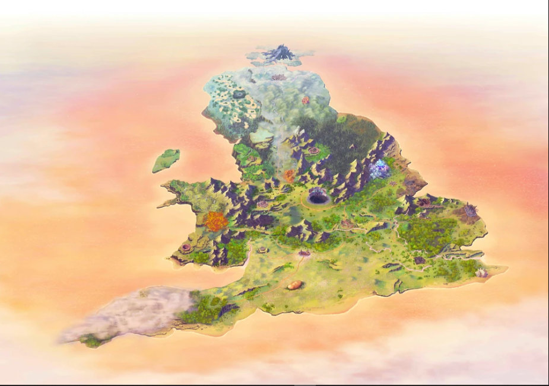

Explorar Avalon Le Fae
Sobre o projeto
Avalon le Fae é o sexto Lostbelt do jogo Fate/Grand Order, ambientado em uma Bretanha Feérica que se desviou da linha do tempo principal durante a Era Celta. A narrativa segue Mash e Fujimaru ao tentarem corrigir essa história distorcida, onde os fadas governam a ilha e uma espada sagrada está ausente.
Informações de Avalon
- Regiões da Bretanha Feérica
- Clãs de fadas
- Personagens e Servos
| Elemento | Informação |
|---|---|
| Lostbelt | 6 |
| Local | Bretanha Feérica |
Fonte oficial de Fate/Grand Order

Formulário
Sua opinião ajuda a melhorar este guia não oficial.